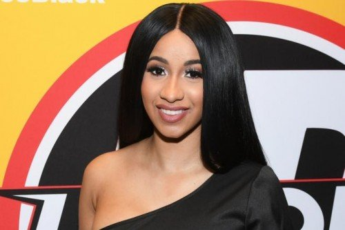
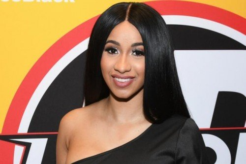
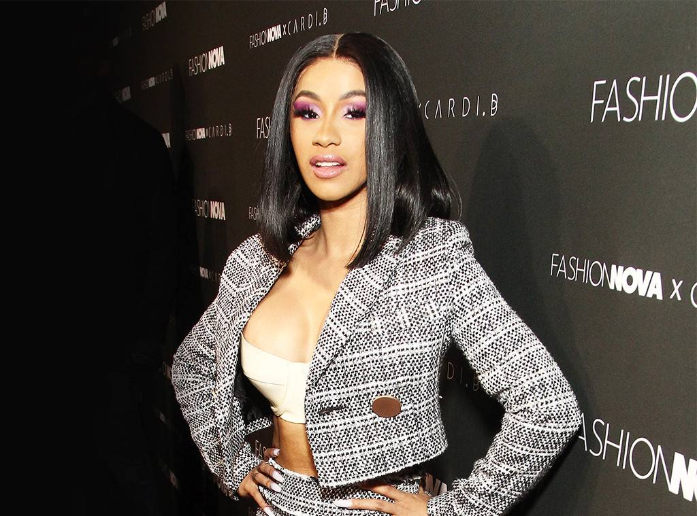
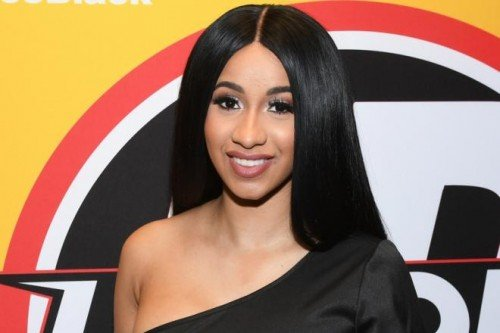

Белкаліс Марленіс Альманзар професійно відома як Cardi B, американський репер, автор пісень і телевізійна особистість.

У січні 2018 співачка Cardi B стала третім в історії виконавцем після британської групи Beatles і американської соул-співачки Ashanti, кому вдалося трьома першими своїми хітами перебувати в кращій десятці Billboard Hot 100 одночасно: № 4 ( «No Limit»), № 7 ( «MotorSport») і № 10 ( «Bodak Yellow»). Cardi B, Iggy Azalea, Grande, Adele і Ashanti це єдині жінки з таким музичним хет-триком у top-10.
6 квітня 2018 року вийшов дебютний студійний альбом Invasion of Privacy.
7 липня 2018 американський хіт-парад очолив хіт «I Like It» у виконанні Cardi B, Bad Bunny і J Balvin. Це другий чарттоппер співачки, що стало рекордом для жінок, які виконують музику в стилі реп.
21 серпня 2018 року на церемонії MTV Video Music Awards Карди Бі отримала 12 номінацій і перемогла в категоріях «Кращий новий виконавець» і «Краща пісня літа» за композицію «I like It», записану разом з Bad Bunny і J Balvin.
За підсумками 2018 року Карди Бі увійшла в рейтинг зірок, які користуються найбільшою популярністю у користувачів, складений ресурсом Pornhub. У 2018 року відвідувачі сайту згадували в своїх пошукових запитах ім'я Карди Бі 12,7 мільйона разів.
